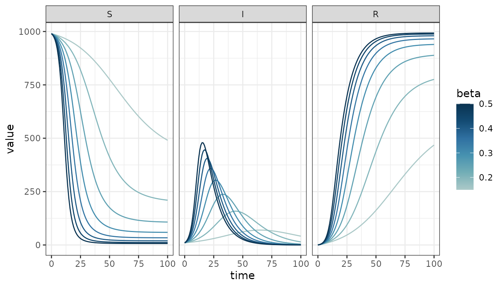
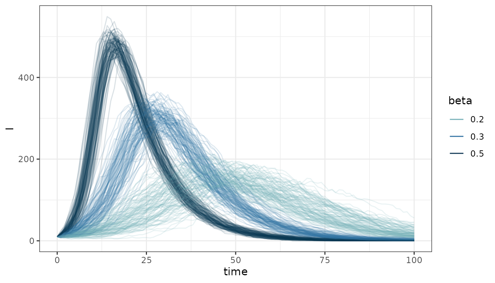
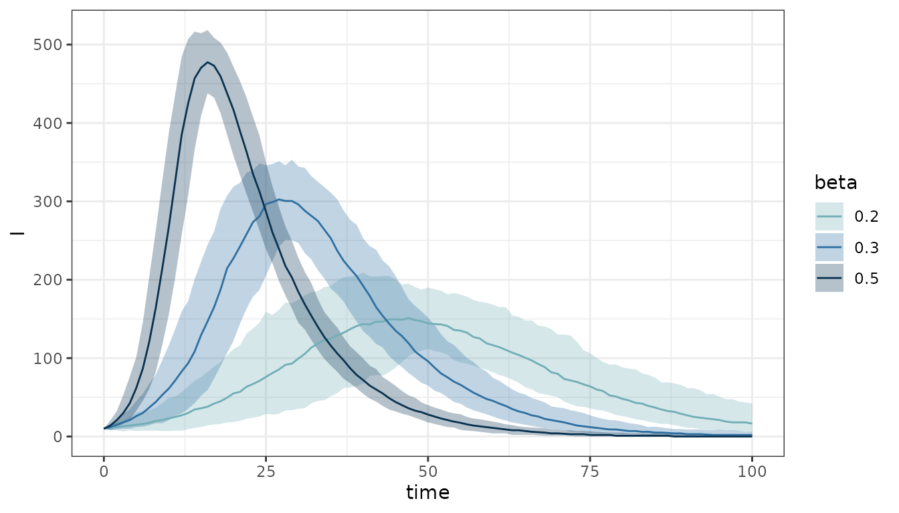
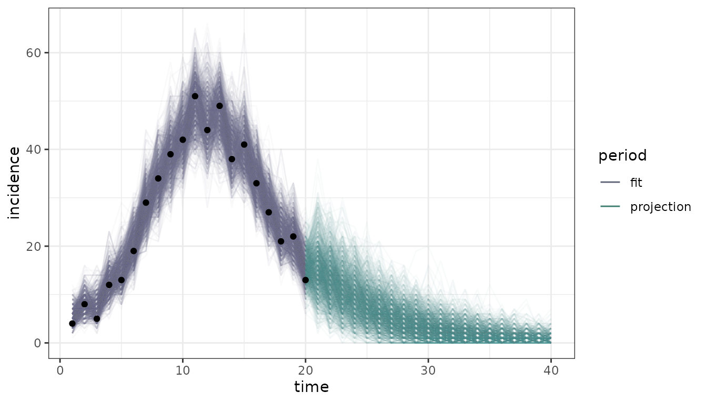
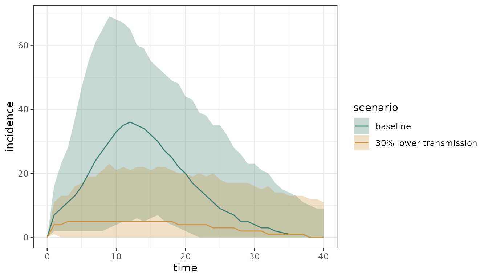
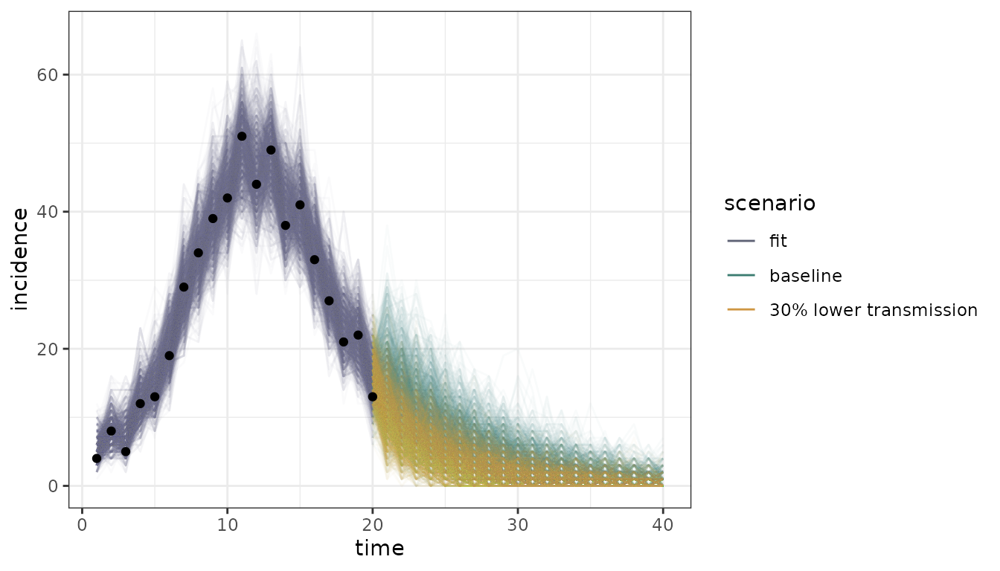

dust2 runs a system that has already been created, for
one set of parameters or one per group. Running a model for many
parameter sets, such as a grid of values or the draws from a fit, takes
some bookkeeping: build each parameter list, create a system with a
group per set, set its state, and keep each trajectory with the
parameters that produced it.
run_parameter_sets() and
continue_parameter_sets() do that, and return an object
with the same structure as the output of monty_sample().
The same tidy functions therefore work on a sensitivity analysis, a fit
and a projection.
library(tidyodin)
library(odin2)
library(dust2)
library(monty)
library(ggplot2)
library(MetBrewer)
theme_set(theme_bw())Sensitivity analysis
A deterministic model
An SIR model written as a set of ODEs:
sir_ode <- odin({
deriv(S) <- -beta * S * I / N
deriv(I) <- beta * S * I / N - gamma * I
deriv(R) <- gamma * I
initial(S) <- N - I0
initial(I) <- I0
initial(R) <- 0
N <- parameter(1000)
I0 <- parameter(10)
beta <- parameter(0.4)
gamma <- parameter(0.1)
}, quiet = TRUE)To see how the epidemic depends on beta, give the values
to try as a data frame, with one row per parameter set and one column
per parameter that varies. Parameters that stay the same in every run go
in fixed:
pars <- data.frame(beta = seq(0.15, 0.5, by = 0.05))
res <- run_parameter_sets(sir_ode, pars, times = 0:100,
fixed = list(gamma = 0.1))
res
#>
#> ── <monty_samples: 1 parameter x 8 samples x 1 chain> ──────────────────────────
#> ℹ Parameters: 'beta'
#> ℹ Conversion to other types is possible:
#> → ! posterior::as_draws_array() [package installed, but not loaded]
#> → ! posterior::as_draws_df() [package installed, but not loaded]
#> → ✖ coda::as.mcmc.list() [package missing]
#> ℹ These samples have associated observations
#> ℹ See `?monty_sample()` and `vignette("samples")` for more informationThe result looks like a set of samples from monty, with
each parameter set as one sample. tidy_trajectories() and
tidy_pars() both identify the parameter set in
sample, so the two can be joined to label each trajectory
with its value of beta:
beta <- dplyr::select(tidy_pars(res), sample, beta = value)
traj <- dplyr::left_join(tidy_trajectories(res), beta, by = "sample")
traj
#> # A tibble: 2,424 × 7
#> chain iteration sample time variable value beta
#> <int> <int> <int> <int> <fct> <dbl> <dbl>
#> 1 1 1 1 0 S 990 0.15
#> 2 1 1 1 0 I 10 0.15
#> 3 1 1 1 0 R 0 0.15
#> 4 1 1 1 1 S 988. 0.15
#> 5 1 1 1 1 I 10.5 0.15
#> 6 1 1 1 1 R 1.02 0.15
#> 7 1 1 1 2 S 987. 0.15
#> 8 1 1 1 2 I 11.0 0.15
#> 9 1 1 1 2 R 2.10 0.15
#> 10 1 1 1 3 S 985. 0.15
#> # ℹ 2,414 more rows
ggplot(traj, aes(time, value, colour = beta, group = beta)) +
geom_line() +
facet_wrap(vars(variable)) +
scale_colour_met_c("Hokusai2")
A stochastic model
The same model in discrete time with stochastic transitions, also tracking daily incidence and with a comparison to case data that is used for fitting below:
sir <- odin({
update(S) <- S - n_SI
update(I) <- I + n_SI - n_IR
update(R) <- R + n_IR
update(incidence) <- incidence + n_SI
p_SI <- 1 - exp(-beta * I / N * dt)
p_IR <- 1 - exp(-gamma * dt)
n_SI <- Binomial(S, p_SI)
n_IR <- Binomial(I, p_IR)
initial(S) <- N - I0
initial(I) <- I0
initial(R) <- 0
initial(incidence, zero_every = 1) <- 0
N <- parameter(1000)
I0 <- parameter(10)
beta <- parameter(0.4)
gamma <- parameter(0.1)
cases <- data()
cases ~ Poisson(incidence)
}, quiet = TRUE)Each run of a stochastic model is different, so one run per value of
beta says little. n_particles sets the number
of realisations to run for each parameter set:
pars <- data.frame(beta = c(0.2, 0.3, 0.5))
res <- run_parameter_sets(sir, pars, times = 0:100,
fixed = list(gamma = 0.1), n_particles = 100,
dt = 0.25)
beta <- dplyr::select(tidy_pars(res), sample, beta = value)
traj <- dplyr::left_join(tidy_trajectories(res, vars = "I"), beta,
by = "sample")
traj
#> # A tibble: 30,300 × 8
#> chain iteration sample particle time variable value beta
#> <int> <int> <int> <int> <int> <fct> <dbl> <dbl>
#> 1 1 1 1 1 0 I 10 0.2
#> 2 1 1 1 2 0 I 10 0.2
#> 3 1 1 1 3 0 I 10 0.2
#> 4 1 1 1 4 0 I 10 0.2
#> 5 1 1 1 5 0 I 10 0.2
#> 6 1 1 1 6 0 I 10 0.2
#> 7 1 1 1 7 0 I 10 0.2
#> 8 1 1 1 8 0 I 10 0.2
#> 9 1 1 1 9 0 I 10 0.2
#> 10 1 1 1 10 0 I 10 0.2
#> # ℹ 30,290 more rowsThere is now a particle column, with 100 realisations
for each value of beta:
ggplot(traj, aes(time, value, colour = factor(beta),
group = interaction(beta, particle))) +
geom_line(alpha = 0.15) +
scale_colour_met_d("Hokusai2") +
labs(y = "I", colour = "beta") +
guides(colour = guide_legend(override.aes = list(alpha = 1)))
summarise_trajectories() summarises over particles and
draws, keeping any other columns as groups. Because beta
has been joined on, the summary is per value of beta:
ggplot(summarise_trajectories(traj),
aes(time, fill = factor(beta), colour = factor(beta))) +
geom_ribbon(aes(ymin = lower, ymax = upper), alpha = 0.3, colour = NA) +
geom_line(aes(y = median)) +
scale_colour_met_d("Hokusai2") +
scale_fill_met_d("Hokusai2") +
labs(y = "I", fill = "beta", colour = "beta")
A stochastic model can also be run without the noise, by passing
deterministic = TRUE. Random draws are then replaced by
their expectations and there is a single trajectory per parameter
set.
Running from monty output
The draws from a fit are another collection of parameter sets. Fit the stochastic model to some case data with a particle filter, saving the trajectories and the final state of each sample:
data <- data.frame(
time = 1:20,
cases = c(4, 8, 5, 12, 13, 19, 29, 34, 39, 42, 51, 44, 49, 38, 41, 33, 27,
21, 22, 13))
filter <- dust_filter_create(sir, time_start = 0, data = data,
n_particles = 100, dt = 0.25)
packer <- monty_packer(c("beta", "gamma"), fixed = list(N = 1000, I0 = 10))
likelihood <- dust_likelihood_monty(filter, packer, save_trajectories = TRUE,
save_state = TRUE)
prior <- monty_dsl({
beta ~ Exponential(mean = 0.5)
gamma ~ Exponential(mean = 0.2)
})
vcv <- matrix(c(0.051, 0.040, 0.040, 0.035), 2, 2)
sampler <- monty_sampler_random_walk(vcv)
samples <- monty_sample(likelihood + prior, sampler, 3000,
initial = c(0.7, 0.45), n_chains = 3)
#> ⡀⠀ Sampling [▁▁▁] ■ | 0% ETA: 46s
#> ⠄⠀ Sampling [▃▁▁] ■■■■ | 10% ETA: 8s
#> ⢂⠀ Sampling [█▂▁] ■■■■■■■■■■■■■■ | 42% ETA: 5s
#> ⡂⠀ Sampling [██▂] ■■■■■■■■■■■■■■■■■■■■■■■ | 74% ETA: 2s
#> ✔ Sampled 9000 steps across 3 chains in 9.3s
#>
samples <- monty_samples_thin(samples, burnin = 1000, thinning_factor = 5)
fit <- tidy_trajectories(samples, filter, vars = "incidence")
nms_variable <- c("S", "I", "R", "incidence")
cols_variable <- met.brewer("Demuth", length(nms_variable))
names(cols_variable) <- nms_variable
nms_scenario <- c("fit", "projection", "baseline", "30% lower transmission")
cols_scenario <- c(cols_variable["incidence"],
met.brewer("Kandinsky")[c(1, 1, 2)])
names(cols_scenario) <- nms_scenarioContinuing a fit
continue_parameter_sets() carries on from the final
state and time of a set of samples, with each sample continuing from its
own state using its own parameters. The model, its time step and the
time of the last data point are taken from the filter, and the packer
says how to turn each sample into parameters for the model. This needs
the final state, so the likelihood must have been created with
save_state = TRUE.
Here each posterior sample is projected forward 20 days:
projection <- continue_parameter_sets(samples, times = 20:40, obj = filter,
packer = packer)
both <- dplyr::bind_rows(
fit = fit,
projection = tidy_trajectories(projection, vars = "incidence"),
.id = "period")
ggplot(both, aes(time, value)) +
geom_line(aes(group = interaction(sample, period), colour = period),
alpha = 0.03) +
geom_point(aes(y = cases), data = data) +
scale_colour_manual(values = cols_scenario) +
labs(y = "incidence") +
guides(colour = guide_legend(override.aes = list(alpha = 1)))
The result can itself be continued, and n_particles runs
several realisations forward from each sample’s state.
Counterfactuals
A counterfactual reruns the model with some parameters changed. Convert the samples to a data frame with one row per sample, and change the parameters there:
pars <- posterior::as_draws_df(samples)
pars
#> # A draws_df: 400 iterations, 3 chains, and 2 variables
#> beta gamma
#> 1 0.68 0.44
#> 2 0.68 0.44
#> 3 1.08 0.82
#> 4 0.56 0.35
#> 5 0.56 0.35
#> 6 0.60 0.37
#> 7 0.60 0.37
#> 8 0.73 0.44
#> 9 0.57 0.27
#> 10 0.76 0.43
#> # ... with 1190 more draws
#> # ... hidden reserved variables {'.chain', '.iteration', '.draw'}
pars_reduced <- pars
pars_reduced$beta <- pars$beta * 0.7Then run both sets from the start. Passing the filter in place of the model means the time step and start time match the fit:
baseline <- run_parameter_sets(filter, pars, times = 0:40, packer = packer)
reduced <- run_parameter_sets(filter, pars_reduced, times = 0:40,
packer = packer)The baseline is rerun rather than taken from the fit so that the comparison is like for like: trajectories saved during a fit have been filtered towards the data, whereas these are both free simulations.
scenarios <- dplyr::bind_rows(
baseline = tidy_trajectories(baseline, vars = "incidence"),
"30% lower transmission" = tidy_trajectories(reduced, vars = "incidence"),
.id = "scenario")
scenarios$scenario <- factor(scenarios$scenario, unique(scenarios$scenario))
ggplot(summarise_trajectories(scenarios), aes(time, fill = scenario)) +
geom_ribbon(aes(ymin = lower, ymax = upper), alpha = 0.3) +
geom_line(aes(y = median, colour = scenario)) +
scale_fill_manual(values = cols_scenario, aesthetics = c("fill", "colour")) +
labs(y = "incidence")
The same changed parameters can be used from the end of the fit instead, for an intervention that starts on day 20. Each sample still continues from its own fitted state:
intervention <- continue_parameter_sets(samples, times = 20:40, obj = filter,
packer = packer, pars = pars_reduced)
future <- dplyr::bind_rows(
fit = fit,
baseline = tidy_trajectories(projection, vars = "incidence"),
"30% lower transmission" = tidy_trajectories(intervention,
vars = "incidence"),
.id = "scenario")
future$scenario <- factor(future$scenario, unique(future$scenario))
ggplot(future, aes(time, value)) +
geom_line(aes(group = interaction(sample, scenario), colour = scenario),
alpha = 0.03) +
geom_point(aes(y = cases), data = data) +
scale_colour_manual(values = cols_scenario) +
labs(y = "incidence") +
guides(colour = guide_legend(override.aes = list(alpha = 1)))
Parameters that are fixed in the packer, such as N here,
can be changed for a counterfactual with the fixed argument
of either function.